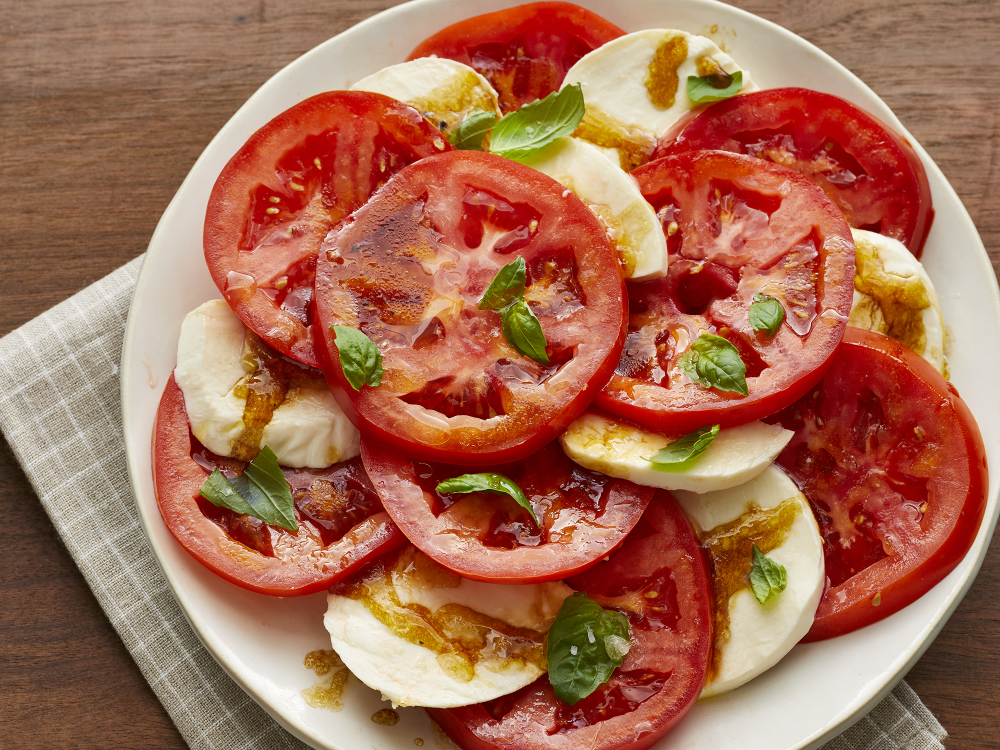

Caprese

Description
Tomato and mozzarella salad served with fresh basil and drizzled with
olive oil... there's nothing better! A perfect salad alternative,
especially in summer when you can get tomatoes and basil from the garden.
Ingredients
- Tomatoes | sliced
- Mozzarella cheese | sliced
- Olive oil
- Balsamic vinegar
- Basil, salt and black pepper
Steps
-
Place tomato slices, alternating with mozzarella slices, on a large
serving platter.
-
Combine oil, balsamic vinegar, salt, and pepper in a jar with a
tight-fitting lid; shake well. Drizzle over tomatoes and mozzarella;
sprinkle with basil.